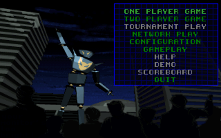
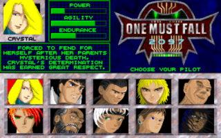
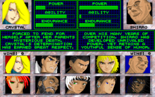
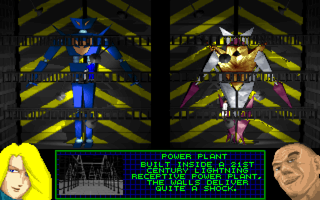
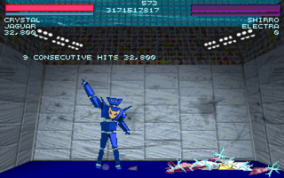
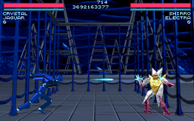
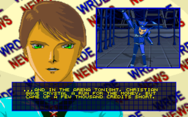
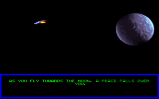

OpenOMF is a Open Source remake of "One Must Fall 2097" by Diversions Entertainment. Since the original DOS game from 1994 still uses IPX networking and is a pain to set up, the community needed a better solution to keep playing the game we love. Together with networking, we try to make it easier to play One Must Fall in original glory on multiple platforms (Linux, Mac OSX, Windows, BSD to name a few).
Project goals
- At first, as faithful a game binary to the original as possible. When this is reached, we can work on new features.
- Better game controller support (new gamepads etc.)
- Better networking support. The original game used IPX/SPX networking, which can nowadays be emulated on eg. dosbox. However, dosbox IPX/SPX routing is annoying to set up and the original game will run slowly on it.
- More network game types. For example full Internet tournaments are being planned.
- Support for new graphics and audio. The current version of OpenOMF already supports loading alternate music files. Support for alternate sprites is coming after the game is otherwise working okay.
- Enhanced tournament mode!
- Enjoying challenges in reverse-engineering and coding :)
Binaries
- Our latest official releases are always available at https://github.com/omf2097/openomf/releases
- There are unofficial windows binaries available at http://katajakasa.fi/projects/openomf/packages/. These are updated every now and then, and may or may not work. Use with caution!
Links
- There are some videos of openomf at http://www.youtube.com/user/openomf
- We have a forum thread at http://omf.justinoakley.com/viewtopic.php?t=312299
- Our official wiki & documentation is at http://www.omf2097.com/wiki/doku.php?id=openomf:start
- We can also be reached on IRC (freenode) at #omf.
- We also have a Google+ account.
Contribute
You may submit patches to this project by forking this repository and making a pull request. If you want to become a regular contributor, please contact us on #omf on irc.freenode.net. We appreciate all kinds of contributions, whether it's big or small.
Donate
Please support us by donating to the OpenOMF Project (Recommended donation: USD$5)
All donations will go towards web hosting, IDA licensing, development time, cat food and beer.Contact
Join us on #omf on irc.freenode.net if you want to get in contact with us.
Screenshots
       
{kind=link}
{kind=link}
{kind=link}
{kind=link}
{kind=link}
{kind=link}
{kind=link}
{kind=link}
Youtube